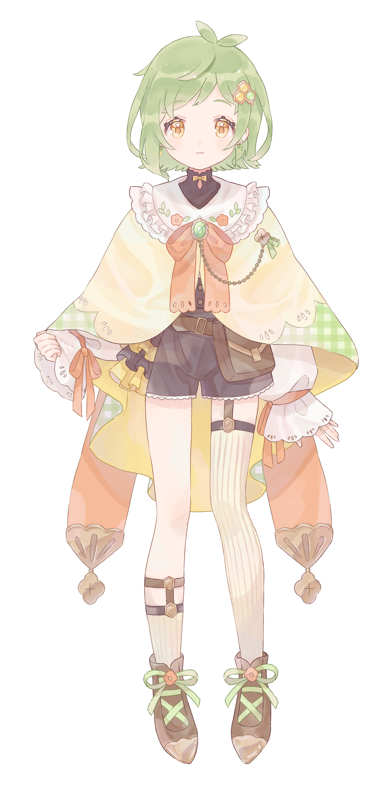
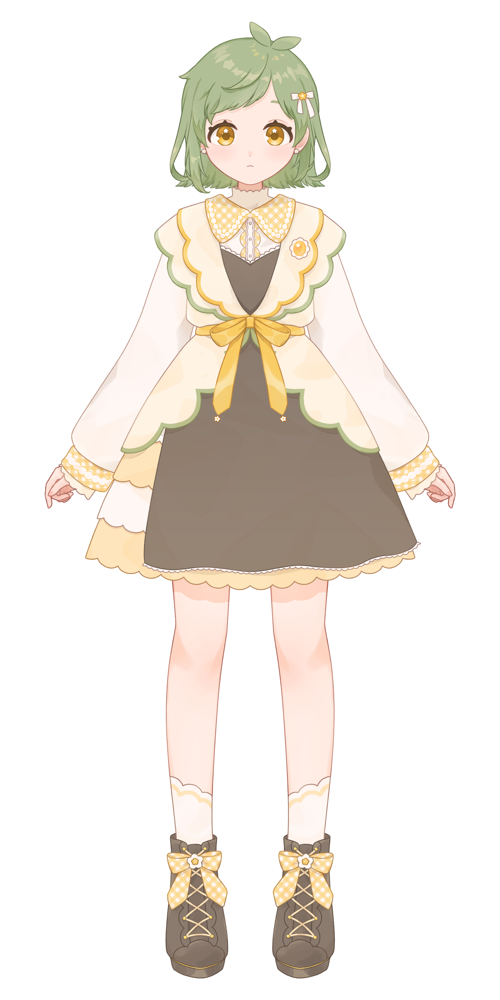

イラスト制作をメインに活動するクリエイターです。
VTuberとして配信活動もおこなっています。
好きな食べ物はマドレーヌとサイゼリヤのハンバーグステーキ。
ミニキャラ / 等身 / マスコットイラスト / マイクラスキン制作
イラスト制作をメインに活動するクリエイターです。
VTuberとして配信活動もおこなっています。
好きな食べ物はマドレーヌとサイゼリヤのハンバーグステーキ。
ミニキャラ / 等身 / マスコットイラスト / マイクラスキン制作

デビュー時からの馴染み深いモデルです。ゲーム配信のときによくみられます。
原案：鉢植みつは
衣装デザインアレンジ、立ち絵、Live2Dモデリング：ぽちぇ さま

3周年記念にお披露目した、比較的新しいモデルです。おえかき配信でよくみられます。
全部：鉢植みつは
配信タグです。感想とかくれたらうれしいです！
FAタグです。絵以外の作品も大歓迎◎
見てほしいもの、伝えたいことがあれば使ってください！
FM：🍯☘️
初見・ROM・配信アカウントからの視聴/コメント→大歓迎です！
挨拶など 特定のコメントを送信すると、配信上にイラストが飛び出すギミックがあります！あたたかいコメントをお待ちしております。
恒常モデルの立ち絵、Live2D、キービジュアル
ネームロゴ
切り抜き動画、short動画